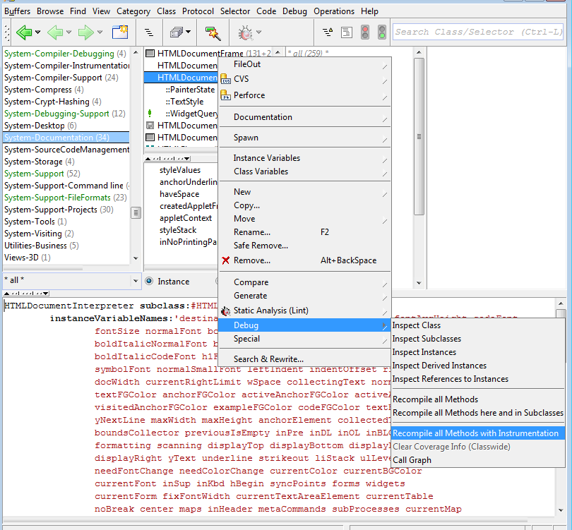
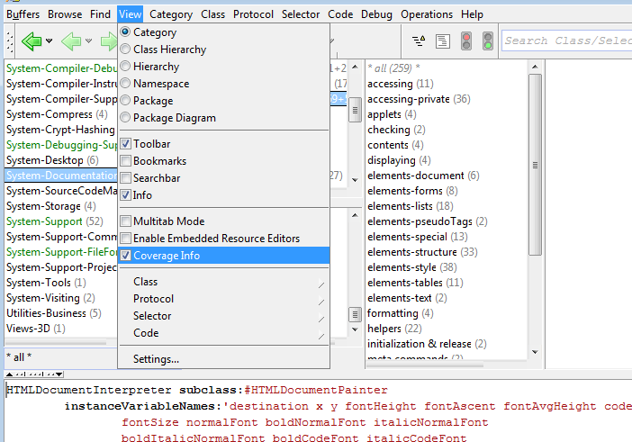
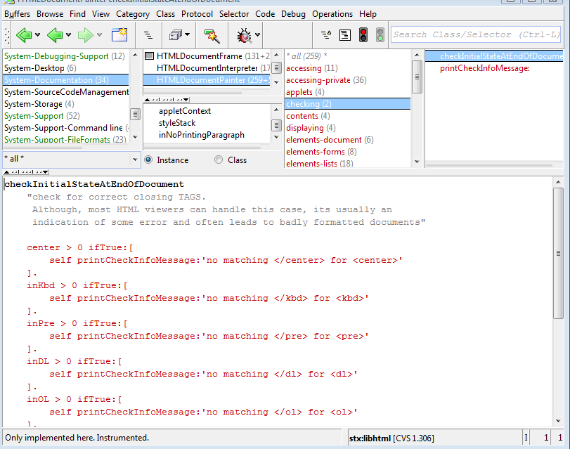
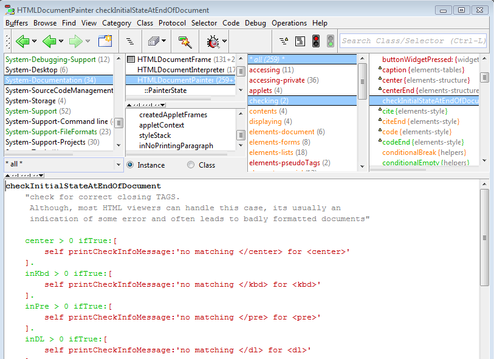

![[prev]](../../../icons/DocsLeftArrow.gif)
![[up]](../../../icons/DocsUpArrow.gif)
![[next]](../../../icons/DocsRightArrow.gif) The browser allows for code to be instrumented such that method entry and
the execution of individual statements is recorded and is
later colorized (typically, after a test run of an sunit test).
The browser allows for code to be instrumented such that method entry and
the execution of individual statements is recorded and is
later colorized (typically, after a test run of an sunit test).
Preparing for Coverage Measurement
To prepare code for instrumentation, recompile it first with instrumentation
via the category's, package's, classes' or the method's debug menu:

Then, enable coverage display in the browser's view menu:

Now, all code should be shown in red color, which indicates
that it was never executed:

Executing the Instrumented Code
Finally, execute the code (typically by running an sunit testsuite, or going through your application).
The browser will then display code which was executed in green, code which was not in red color.
Classes and methods which are partially covered are shown in orange:

(notice that the if-expressions have been executed, whereas the conditional code in the blocks
has not - obviously, all conditions came out as false in that test run)
Rerunning the Instrumented Code
You can clear (i.e. reset) the coverage data,
either on a per class-category or per-class basis
("Class/Category" -> "Debug" -> "Clear Coverage Information")
or system wide ("Debug" -> "Clear all Coverage Information").
For your convenience, there is also a corresponding menu item found in the Launcher's "Class" -> "Debug" menu.
After a clear operation, all instrumented code is again in its original state (i.e. never reached),
and shown in red.
Removing the Instrumentation
To "uninstrument" code, recompile categories, classes or methods via the
"Class/Category/Method" -> "Debug" -> "Recompile without Instrumentation" menu-function.
Notice that the instrumentation does introduce some overhead during execution (remembering the caller
and the type of receiver). Therefore it does make sense to uninstrument your code for faster execution.
Instrumentation Contexts
All of the above were measuring a method's execution regardless of
who called it. This is called "global instrumentation".
In some cases this is not the measurement you want: for example, if you want
to measure the execution of UI or collection classes.
These may get called by many other parts of the system as well,
and you may or may not be interested in those calls.
Actually, most of the time you'd be only interested,
if the code gets called directly or indirectly by your test case, not by any other activity in the system.
For this, you can execute your instrumented code in a local instrumentation context,
either programatically, or via the sunit test runner (which always sets up its own local context).
Contexts are process-specific and are stored in a thread-local variable of the process
during the run. They are also inherited, which means that any forked child process
inherits the parent's instrumentation context.
![[stx logo]](../../../icons/stx.gif) Copyright © 2012-2016 eXept Software AG, all rights reserved
Copyright © 2012-2016 eXept Software AG, all rights reserved
<info@exept.de>
Doc $Revision: 1.6 $ $Date: 2016-11-02 11:55:35 $